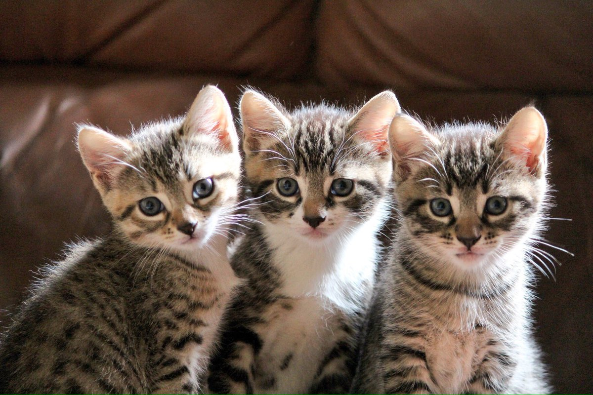

Тут сегодня наружу вылезла одна хорошая мыслишка, так сказать. Ну, вы понимаете, не просто мысль, а некое понимание, которое связано с главным вопросом в этой жизни, кем бы и в каком статусе мы ни были. Это вопрос — как быть счастливым?
Почему именно так звучит вопрос? Да всё, в общем-то, не сложно. Уже сколько лет существует человек, а он так и не перестал путать успех со счастьем.
Ну, предположим, что вы добились результата (успех — это ведь и есть результат) — вышли замуж. Или получили долгожданную должность. Это успех? Да. А будет ли от этого счастье? А вот это как раз неизвестно. Вы можете выйти замуж, но не удачно. Или вы можете получить должность, но получить от неё одни проблемы. Счастье и результат не есть одно и то же.
Счастье
это такой диапазон вибрации души/духа.
Вам может быть даже больно
или вы очень устали
но вы внутри светись!
А что такое счастье?
Счастье это
А что такое неудача?
Так вот это вот
А вот вам немного котиков чтобы глазки отдохнули B-) а то сверху все слишком позитивно для моей ситуации)
